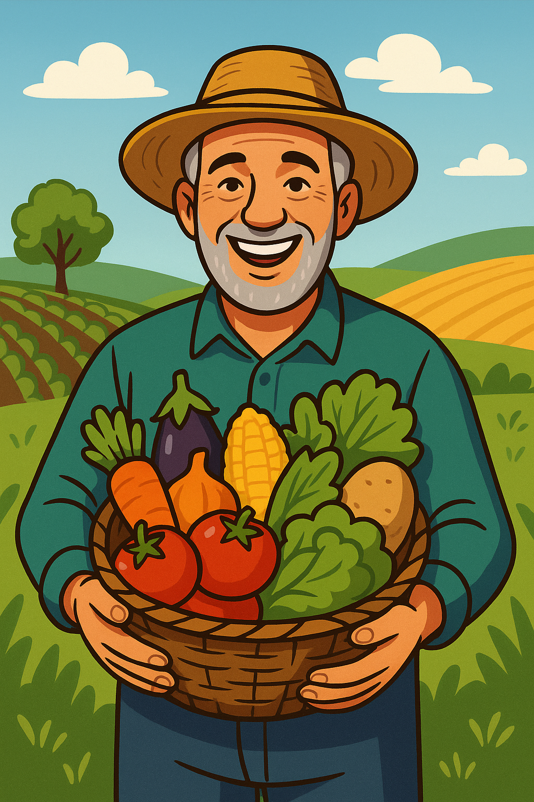
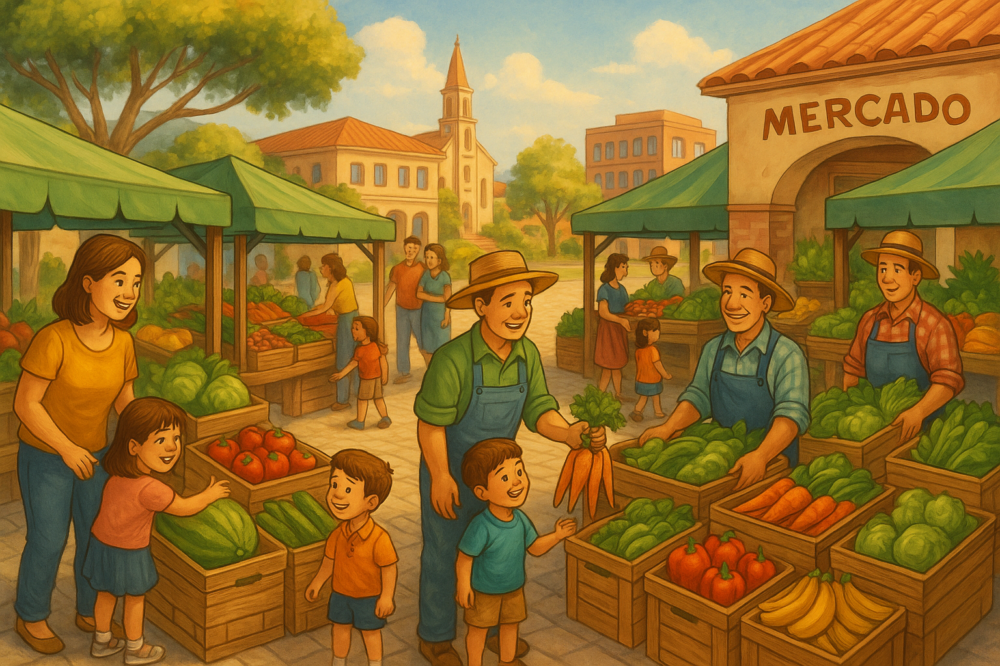
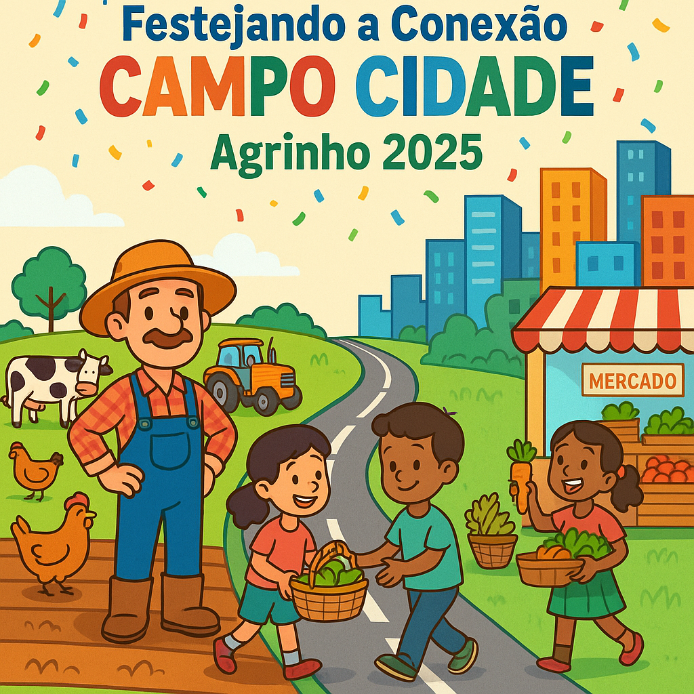

O Agrinho colabora com novos estudos e tecnologia para o campo, vamos ver como?
Festejando a Conexão Campo e Cidade
O Agrinho 2025 celebra uma conexão essencial para a construção de um futuro sustentável: o vínculo entre o campo e a cidade...
Festejar essa conexão é reconhecer a importância da colaboração entre esses dois mundos...
Por isso, propomos uma celebração que una escolas, comunidades rurais e urbanas...
Vamos juntos festejar a união entre o campo e a cidade...
Imagens que Inspiram

O agricultor feliz representa a alegria de quem trabalha com amor na terra...

A feira urbana destaca a conexão direta entre campo e cidade...

Esta imagem representa o elo entre as pessoas do campo e da cidade...

Festejar é celebrar a união! A festa mostra a valorização mútua entre campo e cidade...